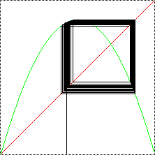

| Recall fixed points exhibit three types of stability: |
| stable |
sufficiently nearby points iterate toward the fixed point |
| unstable |
sufficiently nearby points iterate away from the fixed point |
| indifferent |
neither stable nor unstable |
|
| Cycles exhibit the same types of stability. For example,
here are graphical iteration plots near a stable 2-cycle
(left) and near an unstable
2-cycle (right). |
| To check the stability of an n-cycle for f(x),
we use the blue bowtie method developed
in our study of the stability of
fixed points, but applied to the graph of fn(x).
Click each picture to see the graph of L2(x) and the
corresponding bowtie diagram. |
|
 |
| The path spirals it toward the fixed point. |
The path does not approach the fixed point. |
|
| A natural question is this "for an n-cycle, can one of the corresponding fixed points
of fn(x) be stable and the other unstable?" |
| The answer is "No," but the proof requires some
calculus. |
| If x = 1/2 belongs to the cycle, it is called
superstable. More generally, a cycle is superstable if
the graph of the function has a horizontal tangent line at one point of the cycle. |